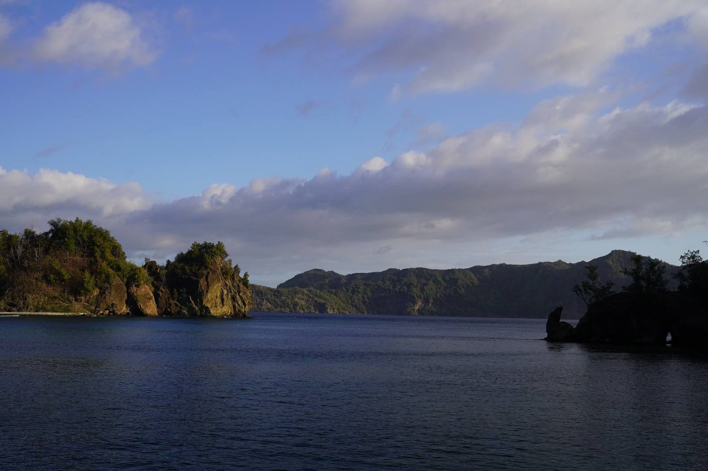

海ごみの回収・撤去
環境省・東京都の事業を受託。主要な海岸に加え、松海岸や二業地北海岸など手の届きにくい海岸、傭船で渡る東海岸や属島まで清掃しています。



一度も大陸とつながったことのない海洋島・小笠原。
流れ着く海ごみと、消えつつある固有の生きものに、島から向き合っています。
日本本土から南へ約1,000km、ユネスコ世界自然遺産の小笠原諸島。小笠原海洋島研究会（BOISS）は2008年から父島に本拠地を置き、島民が企業・行政とパートナーシップを組んで、自然環境を守るための調査・教育・啓蒙活動に取り組んでいます。
海岸漂着ごみの回収、固有のトンボ・ハンミョウ・ハナバチなど希少昆虫の保全、子どもたちへの環境教育、地産地消やまちづくりへの提言まで。環境保全部と昆虫事業部の2部門で、島の自然と島民が共生できる豊かな島を目指しています。
沿革・団体概要を見る →設立総会で定款を承認し、理事を選出。「NPO法人小笠原クラブ」として出発
東京都からNPO法人として認証。父島を本拠地に、希少昆虫（オガサワラトンボほか）の保全と海岸清掃を開始
環境省のマリンワーカー事業（海岸清掃等）の受託を本格化。父島列島を中心に、聟島列島・西之島など無人島・アクセス困難な海岸での活動へ展開
地産地消事業として月桃水を開発・販売。父島周辺でザトウクジラの生態調査を開始
アホウドリ繁殖地の復元に向けた環境教育（〜2014）
オガサワラハンミョウの保全を開始
聟島列島でアホウドリのモニタリング調査と啓蒙活動（〜2019）
「NPO法人小笠原海洋島研究会」に名称変更。海岸にマイクロプラスチック回収ボックスを設置
身近な固有ハナバチ類の保全を開始
チチジマヒメカタゾウムシの保全を開始
企画展「中通島のハナバチ」を小笠原世界遺産センターで開催
KAHAKAI KIDSの後進となる「BOISS KIDS CAMP」をプレ実施。2027年からの本格始動を予定
島の「いま」を記録し、守り、伝える。海ごみと希少昆虫の保全を軸に、教育や地域づくりまで取り組んでいます。
環境省・東京都の事業を受託。主要な海岸に加え、松海岸や二業地北海岸など手の届きにくい海岸、傭船で渡る東海岸や属島まで清掃しています。
固有トンボ類（2004〜）、オガサワラハンミョウ（2015〜）、固有ハナバチ類（2022〜）、チチジマヒメカタゾウムシ（2023〜）を保全しています。
詳しく見る小笠原中学校・小笠原高校での授業、島の子どもが1泊2日で「とる・つくる・たべる」を体験する「BOISS KIDS」、大学のビーチクリーン受け入れ。
2019年から海岸に回収ボックスを設置。大村海岸・宮之浜・扇浦などで継続的にサンプリングし、データを蓄積しています。
子ども9名が1泊2日で島に暮らす体験。野菜の収穫と天ぷら、ヤギのお世話、羽釜ごはん、森たんけん、海あそび。買い物から自炊までを子ども会議で決め、出たごみと海のつながりを考えました。
9/7〜9/16に開催。父島・母島の8つの海岸に海ごみ回収ボックスを設置し、誰でも参加できる形で実施。
TOKYO海ごみゼロアクションの詳細を見る ↗千代田区教育委員会と小笠原村教育委員会の協定による交流事業。6泊7日で来島した千代田区立中学校の生徒と一緒に海岸を清掃し、流れ着くごみと海のつながりを伝えました。
父島から北へ約70km、船で片道約4時間かかる無人島・聟島で、すみだ水族館と行政機関、BOISSが連携して海岸清掃。テント泊の2日間で13㎥の漂着ごみを回収しました。
海ごみゼロウィークにあわせて清掃イベントを実施。参加者とともに海岸の漂着ごみを回収し、海ごみ問題を身近な行動から考える機会としました。
環境省「マリンワーカー事業 小笠原国立公園父島列島海岸清掃業務」の一環として、兄島ロングビーチで海岸清掃を実施。砂に埋もれた漁具や岩の隙間の漂着物まで回収しました。
7チームに分かれて清掃し、回収量を計量。ザルを使ってマイクロプラスチックも採集しました。
島外から来た子どもたちと海岸清掃。班ごとに回収量を量り、海ごみの量を実感してもらいました。
地域住民8名・BOISSスタッフ2名で実施。マリンワーカー事業の一環として漂着ごみ3.5㎥を回収し、環境教育を兼ねた海岸清掃を行いました。
地域住民12名・BOISSスタッフ2名で4時間の清掃を実施。マリンワーカー事業の一環として、崖下や岩場に溜まった大型漂着物を含む4.0㎥を回収しました。
島に流れ着くごみがどこから来て、どこへ行くのか。中学生と一緒に考える授業を行いました。
環境省「マリンワーカー事業 小笠原国立公園父島列島海岸清掃業務」の一環として実施。人の手では動かしにくい大量の漂着漁網を、島の仲間と力を合わせて撤去しました。
宮之浜・大村海岸・製氷海岸・扇浦海岸の4地点に専用BOXを設置。毎月計測し、年間を通したマイクロプラスチック調査を行っています。調査対象外のごみは入れないようご注意ください。
小笠原村社会福祉協議会が運営する学童クラブ「とびうおクラブ」の子どもたちと、製氷海岸でビーチクリーンを実施。プラスチックごみやマイクロプラスチックを拾い集め、海ごみについて一緒に学びました。
小笠原世界遺産センターで、固有ハナバチと保全活動を紹介。地球環境基金の助成事業。
自然公園法第19条に基づく「国立・国定公園の海域適正管理推進（マリンワーカー）事業」として環境省より発注。BOISSは2009年度から海岸清掃等を本格的に受託しています。
個人では運べない大型の漂着物を、関係機関と連携して撤去・処理。
BOISSは、決まったパッケージを販売するのではなく、目的に合わせて小笠原での活動を一緒に組み立てます。現地調整、フィールドでの実施、調査・記録、環境教育、成果の整理まで、島に根ざしたチームとして伴走します。
内容・人数・実施場所に応じて個別提案企業・NPO・学校・研究機関のみなさまへ。小笠原の自然と向き合う取り組みを、ゼロから一緒につくりませんか。
企業・NPO・学校・研究機関との連携、CSR・研修・調査・取材・協賛など。企画段階でも構いません。小笠原で何ができるかからご相談ください。
info@ogasawara-boiss.jp送信内容はBOISSのお問い合わせとして受け付けます。お急ぎの場合は info@ogasawara-boiss.jp へ直接ご連絡ください。